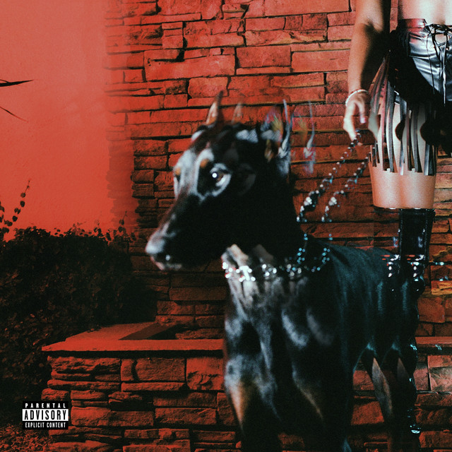
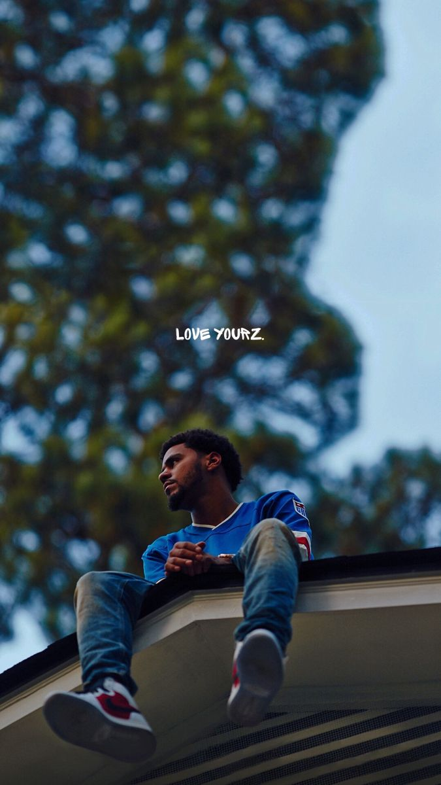

My Beat
R&B
Relaxing and soulful R&B tracks that I love.
-

Artist: Frank Ocean - Song: Self-Control
A heartfelt track from Frank Ocean's "Blonde" album, exploring themes of love and longing.
-
Artist: Daniel Caesar - Song: Streetcar
A soulful cover of Kanye West's "Street Lights," filled with emotion and introspection.
-

Artist: Leon Thomas - Song: Mutt
A smooth and jazzy track showcasing Leon Thomas's incredible vocal range.
Rap
Fun and upbeat rap songs that I enjoy.
-

Artist: J.Cole - Song: Love Yourz
A motivational track reminding listeners to appreciate their own lives.
-

Artist: Drake - Song: You Broke My Heart
A catchy and emotional track about heartbreak and moving on.
-

Artist: Kendrick Lamar - Song: United In Grief
A powerful and introspective track from Kendrick's critically acclaimed album.
Indie Pop
Catchy melodies that make me happy.
-
Artist: NIKI - Song: La La Lost You
A bittersweet track about love and heartbreak, set in the city of Los Angeles.
-

Artist: Clairo - Song: Flaming Hot Cheetos
A chill and quirky track with a nostalgic vibe.
-
Artist: Men I Trust - Song: Show Me How
A dreamy and relaxing track with soothing vocals and instrumentation.